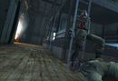

Forums galactiques > Assemblée Galactique : diplomatie officielle > Poison d'avril
Pages : 1
| Pyrania Respect diplomatique : 11  06/04 ETU 12:13 | Score : 5 Détails Comme toujours les faibles d'esprits sont toujours au pouvoir...
mais pas pour longtemps. Les tours de passe passe de l'AST pour masquer leur défaite prochaine ne trompent plus personne. L'Ultrémisme n'a jamais été aussi puissant et l'armée des sans terre n'a jamais aussi bien portée son nom. C'est pourquoi j'offre gratuitement des caravanes stélaires à tout ASTiens le demandant et une planète que j'ai appelé BERESINA pour que ceux ci ce rappellent de leurs erreurs. L'AST est un poison mais nos chers guides spirituels ultrèmes possèdent le vaccin de guérison... le seul permettant de guérir la dégénérescence... Vive l'ultrémisme à mort les impis !!! | ||
| Kamahl Respect diplomatique : 38  06/04 ETU 12:21 | Score : -1 Détails "Et oui il est regrettable de constater que l'AST ne comprend pas de vaches dans ses rangs... Ce sont donc des impis..."
Puis Kamahl rougit à sa plaisanterie douteuse et s'en alla en rasant les murs. | ||
| Largo Respect diplomatique : 442  06/04 ETU 12:49 | Score : 4 Détails Juste une petite question d'organisation: pourquoi répondre à un topic par un autre topic? Pourquoi ne pas répondre à la suite?
| ||
| l\'abbé ramouflon Respect diplomatique : 579  06/04 ETU 13:59  | Score : 1 Détails J'associe tout le venin que que contenir ma salive au Poison de mon Frère Pyrania .
| ||
| Jerry Kan Respect diplomatique : 44  06/04 ETU 20:58 | Score : -1 Détails aux dernieres nouvelles vos positions reculent toujours, on reparlera de tout ca quand vous repris le siège du gouvernement dans le système 0
| ||
| wes trebor Respect diplomatique : 106  06/04 ETU 21:08 | Score : 0 Détails Chers amis commandants
j'aimerai juste savoir pourquoi parler de cela a l'Assemblé. Les débats de qui est le plus fort entre Ultreme et AST devrait plutot se faire entre interessé à la taverne.. Loin de moi l'idée de critiquer ces coalitions mais nous avons déjà tant débatu sur ce sujet que je trouve inutile de mettre cela aux ordres du jour quand les elections sont si pret d'arriver. |
Pages : 1
Forums galactiques > Assemblée Galactique : diplomatie officielle > Poison d'avril